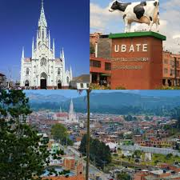

ubate capital lechera
foto del municipio

himnos
Con acento febril entonemos
De esta tierra su himno triunfal,
Y a tu historia gloriosa cantemos
Para nunca tu nombre olvidar. (Bis)
I
Fuiste asiento de tribus heroicas
Cundinamarca, patria sin igual,
Que labraron altivas tus rocas
Y forjaron tu sino inmortal. (Bis)
II
Son tus campos riqueza y solana,
Esperanza de un pueblo que en fe,
Dignamente honra a Colombia
Con trabajo, valor y altivez. (Bis)
III
Por la patria, el derecho y la ley
Un abrazo de amor y de paz,
Para todos los que en tu suelo
sitios turisticos
Destacan la majestuosa Basilica Menor del Santo Cristo
la plaza de mercado con sus lacteos, artesanias y
gastronomia, ademas de las actividades del aire libre
como senderismo en el embalse